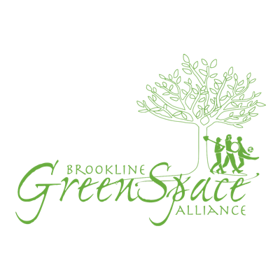
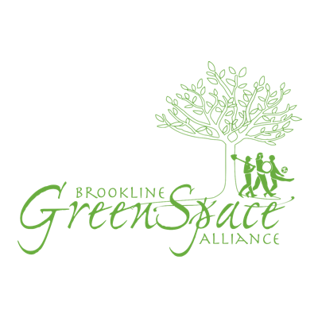

This family-friendly event showcases Frederick Law Olmsted’s forgotten Beacon Street bridle way, constructed in the 1880s. The bridle way parallels the trolley tracks along the entire length of Beacon Street in Brookline between Audubon Circle and Cleveland Circle. It was once a pleasant, tree-lined path for horseback riding. With the coming of motor cars in the twentieth century, the bridle way was repurposed for car parking. A renewed plan calls for restoration of Olmsted’s bridle way as a key active-transportation link along the Beacon Street median, without requiring major removal of car parking.
On Saturday, May 18, from 10 AM to 2 PM, a portion of the old path will be closed for car parking and opened for strolling, jogging, scooting, biking, and a variety of community activities along-side. Come re-imagine the space as a community amenity in the heart of Brookline. Discover the history of the bridle way, try out a section, ask questions, and provide feedback about your experience.
This event is organized by the Brookline Bicycle Advisory Committee and the Friends of the Beacon Street Bridle Path, with the support of the Brookline GreenSpace Alliance, Climate Action Brookline, and LivableStreets Alliance.
We thank John Dempsey for his prime role in organizing the Brookline Bike Parade for ten years from 2007 to 2017. That event gathered the community in celebration of the joys and benefits of active transportation, and it highlighted the importance of Beacon Street to Brookline and the region. We hope that this new event, highlighting renewed possibilities, will honor and continue the wonderful tradition that John started.
Want to help out with this event? You can sign up to volunteer.
Want to support this event but can’t attend? You can make a donation.
Want to promote this event? You can share the flyer (PDF or JPG).
Follow: @BeaconBridleway
E-mail: [local-part:]hello[sign:]@[domain:]beaconbridleway.org
{kind=link}